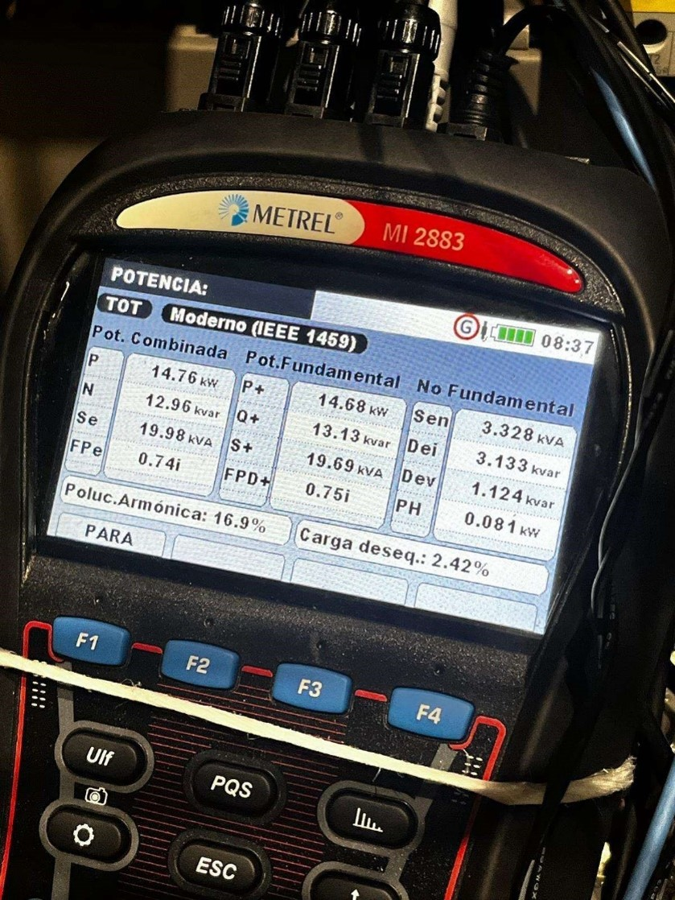

estudio eficiencia energetica cnc, auditoria consumo maquina cnc, norma VDMA 34179, analizador redes metrel mi 2883, optimizacion consumo electrico neumatico centro mecanizado

AUDITORÍA Y EFICIENCIA ENERGÉTICA
Centro de Mecanizado Heckert HEC 1250
Estudio de Caracterización Energética y Análisis de Consumo (VDMA 34179)
Máquina: Heckert HEC 1250 (2007)
Equipo de medida: Analizador de redes Metrel MI 2883 (IEEE 1459) + Datalogger neumático
Normativas de referencia: VDMA 34179 / EN 50160
Estudio e informe de auditoría energética en centro de mecanizado industrial para caracterizar el comportamiento eléctrico y neumático en los estados OFF, STANDBY, OPERATIONAL y WORKING.
Análisis de picos de potencia activa (hasta 130,12 kW en Working) y consumo de aire comprimido equivalente para optimizar costes operativos y detectar ineficiencias en periodos de inactividad.
Ver informe técnico →